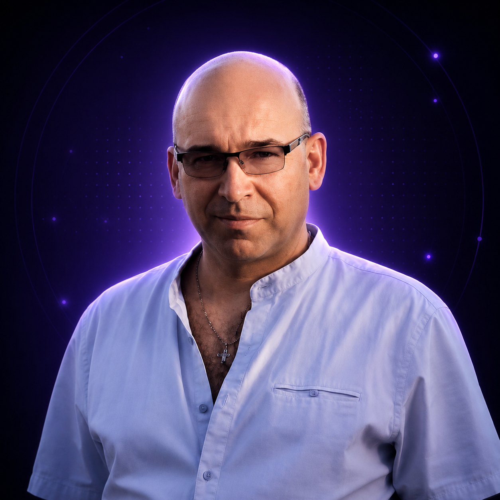

ПозвонитьСоздаю AI-решения, которые экономят время, увеличивают продажи и упрощают работу: Telegram-боты, AI-ассистенты, CRM-связки и автоматизация заявок.
Упаковка, офферы, тарифы и AI-аудит для экспертов.
Бот для записи клиентов, ответов, заявок и статусов.
AI-помощник с памятью о проектах, задачах и клиентах.
AI-ассистент для экспертов и команд.
Меня зовут Сергей Кудинов. Я занимаюсь внедрением AI-инструментов, автоматизацией бизнеса, созданием Telegram-ботов, AI-ассистентов и CRM-систем.
Telegram-боты, AI-ассистенты, CRM-интеграции, автоматизация заявок и консультации.
Telegram: @seregakudinoff
Телефон: +7 982 285-45-19